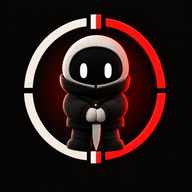

‹ Volver a Punto CiegoSoporte
¿Algo no va como esperas? Aquí tienes cómo se juega, los problemas más habituales y cómo escribirnos.
Cómo se juega
- Cada jugador abre la web en su móvil, pulsa Jugar y entra con su cuenta (o crea una).
- Uno crea la partida y comparte el código; los demás se unen con él. Si prefieres, escanea el QR.
- El anfitrión elige habitaciones, impostores y tareas, y empieza.
- Se reparten los roles en secreto. Tripulantes: completad las tareas por la casa. Impostores: sabotead y eliminad sin que os vean.
- Al encontrar un cuerpo o pulsar la emergencia hay reunión y votación. Ganan los tripulantes si completan las tareas o expulsan a todos los impostores; ganan los impostores si igualan en número.
Problemas típicos
El código de la partida no funciona o no encuentro la partida
Comprueba que escribes bien el código y que el anfitrión sigue en la sala de espera. Si abriste el enlace dentro de WhatsApp o Instagram, ábrelo en Safari o Chrome. Algunas redes (de empresa, de colegio o de datos con restricciones) bloquean los servidores de mensajería: prueba con otra red o con los datos del móvil.
El micrófono no funciona
Dentro de WhatsApp, Instagram u otras apps el micrófono suele estar bloqueado: abre el enlace en Safari o Chrome. Si denegaste el permiso sin querer, actívalo en los ajustes de tu móvil o navegador para este sitio.
Me he desconectado a mitad de partida
Recarga la página: vuelves a tu sitio. Si el anfitrión se desconecta, la partida se traspasa a otro jugador.
Me sale «Hay una versión nueva, recarga la página»
Se ha publicado una actualización. Cierra la app del todo y ábrela de nuevo con conexión, o recarga la página. Todos los jugadores de la partida tienen que tener la misma versión.
Un jugador me molesta: cómo bloquear o reportar
El chat de voz y de texto es entre amigos y no está moderado. Para bloquear, toca «Bloquear» junto al jugador en la lista de jugadores (o ⚑ junto a sus mensajes en el walkie): dejas de oír su voz y de ver sus mensajes en esa partida, solo en tu móvil. Para reportar, elige «Reportar» en el mismo cuadro: se abre un correo a soporte con su nombre, el código y la fecha; añade qué ha pasado y envíalo.
No me deja entrar con mi cuenta
La cuenta es la misma que la de Punto Falso. Comprueba el correo y la contraseña, o entra con Google o Apple si te registraste así. Si el problema sigue, escríbenos.
¿Cómo borro mi cuenta?
Entra con tu cuenta, abre tu perfil y toca Eliminar cuenta. Se borran al momento tu correo, tu nombre y tu personaje. Es la misma cuenta que usas en Punto Falso: al borrarla aquí también se borra allí. Detalles en la política de privacidad. Si no puedes entrar, escríbenos desde tu correo de registro.
Quiero jugar sin cuenta
Para jugar partidas con otras personas hace falta una cuenta gratuita, pero solo se guardan tu correo, tu nombre y tu personaje.
Contacto
Las normas de uso están en los términos y condiciones. Escríbenos a javivalmich@gmail.com contando qué móvil y navegador usas y qué ha pasado. Respondemos en unos días.